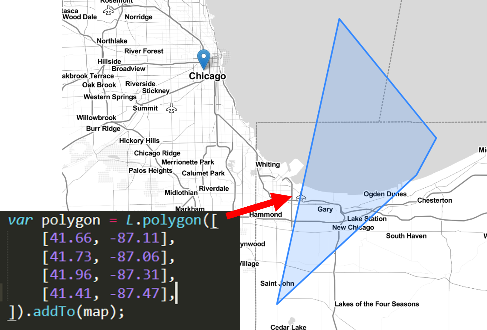
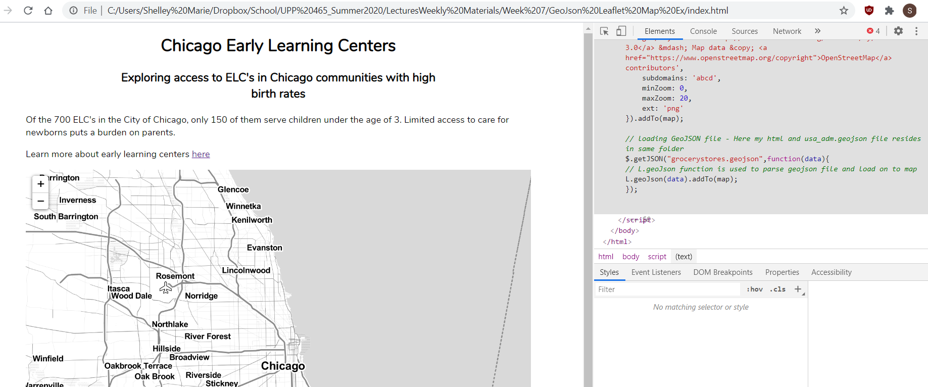

Week 7
GeoJSONs & Conditional Formatting
Overview of Today's Class
- Homework Notes
- GeoJSON Overview
- Conditional Formatting
- Homework
Homework Notes
- HW notes
GeoJSONs
Similar to shapefiles, GeoJSON is a format for storing geographic features & their non-spatial attributes
Based on JSON (JavaScript Object Notation)
Can be used in ArcGIS Online & Desktop, QGIS, etc…
Let's talk about some practical GeoJSON things before we get into the nitty gritty.
Convert Shapefiles (& other geoformats) to GeoJSON
ArcGIS Online
- From your content, select Feature Layer
- Click "export data" from options on left
- Export as GeoJSON & select where to save (somewhere in your AGOL content)
- Navigate to your newly created GeoJSON, click, and download!
QGIS
- From layers section, right click layer & export to:
- Format: GeoJSON
- CRS: WGS 84
- Layer Options (COORDINATE_PRECISION = 5 (5 decimal places is close enough to get you to a few feet with lat log)
It is a bit more complicated with ArcGIS Map/Pro, but instructions are linked in the course page.
How to add GeoJSON data to your leaflet map?
Last week we manually wrote features to add to the map
This week, we will link to a GeoJSON file.
First: we need to add jQuery (javacript library) & ajax (data retrieval tool for javascript). Copy & paste the following headings into your html heading:
I won't make you hunt it down this time :)
Next, under your Leaflet map, use jQuery & leaflet methods to add the geoJSON data to your map.
$ = jQuery method (similar to “L” for leaflet)
That's it! You've added the GeoJSON features to your map
The annoying thing:
Similar to embedding an AGOL map, there’s a security quirk (well, a very useful feature) that does not allow you to view the geojson data locally. The data will load on upload to Github. Give yourself time to upload & test as you work on the project.
So this is not useful to look at. Let's break down GeoJSON's so we can style them.
GeoJSON Syntax
GeoJSONs are composed of at least one object
These can be types, which contain the geometry of the object and nothing more.
Note: Multi-types represent a single object that has multiple parts.
For example, Michigan is one object composed of two separate polygons (the upper and lower peninsula)

Types can be combined with properties to create a Feature object.

Multiple features can be combined into a Feature Collection

Don't stress when you open your GeoJSON and it looks like this


So how do we make this look reasonable?
The default style for GeoJSON points are the default blue Leaflet markers
Change Default Icon to Circles
Step 1: Add an object within the L.geojson data parameter.
(add a comma then curly { } brackets after "data")
Step 2: Add a property.
Inside the curly brackets, add a built-in geojson function called “pointToLayer”
pointToLayer has two parameters: feature, latlng. Leave these. (latlng returns the point coordinates)
Step 3: Inside pointToLayer function, call (return) a “new” L.CircleMarker
In the parameters of the leaflet function CircleMarker, you’re adding the latlng points of your geojson, and then the style elements.
Check-in
What is going on between all these parentheses, brackets, and commas?
- Calls the geojson data
- Loads the geojson data
- Adds a function as a property to the data
- Tells the function what to do:
Add a pop-up to your point
After our pointToLayer function, we will add another function: the onEachFeature function
As implied by the name, the onEachFeature function will go through each feature in our geojson and do whatever we tell it to do
Questions?